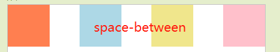

原文连接:https://www.cnblogs.com/tangshiwei/p/11787802.html
前言
2019年6月中旬，实在厌倦了之前平平淡淡的工作和毫不起眼的薪资，不顾亲人的反对，毅然决然地决定只身前往沿海城市，想着找到一份更加具有挑战性的工作，来彻彻底底地重新打磨自己，同时去追求更好的薪资待遇。当然在此之前，自己每天下班后都会利用业余时间抓紧复习巩固刷题等等，大概从3月份开始的吧，持续了3个多月。而后从6月中旬面试一直到6月底，中间大概两个星期，其实我的学历和背景并不突出，但是我个人感觉可能是因为自己简历做的稍微还行(后面我可能会单独出一篇文章，来聊聊我做简历时的一点点心得)，让大厂的HR能够多看几眼，中间面过的公司包括喜马拉雅、携程、哔哩哔哩、流利说、蜻蜓FM、爱回收等，陆陆续续拿到4，5个Offer吧，如今已经转正，所以在这里记录下之前的部分面试题，和大家一起分享交流。
正文
1. 烈熊网络
这家公司其实我也没有太了解过，是我前同事推荐的，说里面的薪资待遇不错，然后我当时也有空闲时间，所以就去试试了，虽然公司名气没有上面提到的公司大，但是他的面试题我觉得还是挺有分量的。
1.1 请说出下面代码的执行顺序
async function async1() {
console.log(1);
const result = await async2();
console.log(3);
}
async function async2() {
console.log(2);
}
Promise.resolve().then(() => {
console.log(4);
});
setTimeout(() => {
console.log(5);
});
async1();
console.log(6);我的回答是[1,2,6,4,3,5]。这道题目主要考对JS宏任务和微任务的理解程度，JS的事件循环中每个宏任务称为一个Tick(标记)，在每个标记的末尾会追加一个微任务队列，一个宏任务执行完后会执行所有的微任务，直到队列清空。上题中我觉得稍微复杂点的在于async1函数，async1函数本身会返回一个Promise，同时await后面紧跟着async2函数返回的Promise，console.log(3)其实是在async2函数返回的Promise的then语句中执行的，then语句本身也会返回一个Promise然后追加到微任务队列中，所以在微任务队列中console.log(3)在console.log(4)后面，不太清楚的同学可以网上查下资料或者关注我的公众号「前端之境」，我们可以一起交流学习。
1.2 手动实现Promise，写出伪代码
幸运的是在面试前刚好查阅了下这部分的资料，所以回答过程中还算得心应手，主要是需要遵循Promise/A+规范：
(1) 一个promise必须具备三种状态(pending|fulfilled(resolved)|rejected)，当处于pending状态时，可以转移到fulfilled(resolved)状态或rejected状态，处于fulfilled(resolved)状态或rejected状态时，状态不再可变；
(2) 一个promise必须有then方法，then方法必须接受两个参数：
// onFulfilled在状态由pending -> fulfilled(resolved) 时执行，参数为resolve()中传递的值
// onRejected在状态由pending -> rejected 时执行，参数为reject()中传递的值
promise.then(onFulfilled,onRejected)(3) then方法必须返回一个promise：
promise2 = promise1.then(onFulfilled, onRejected);实现代码直接贴出来吧：
function myPromise(constructor){
let self=this;
self.status="pending" //定义状态改变前的初始状态
self.value=undefined;//定义状态为resolved的时候的状态
self.reason=undefined;//定义状态为rejected的时候的状态
self.onFullfilledArray=[];
self.onRejectedArray=[];
function resolve(value){
if(self.status==="pending"){
self.value=value;
self.status="resolved";
self.onFullfilledArray.forEach(function(f){
f(self.value);
//如果状态从pending变为resolved，
//那么就遍历执行里面的异步方法
});
}
}
function reject(reason){
if(self.status==="pending"){
self.reason=reason;
self.status="rejected";
self.onRejectedArray.forEach(function(f){
f(self.reason);
//如果状态从pending变为rejected，
//那么就遍历执行里面的异步方法
})
}
}
//捕获构造异常
try{
constructor(resolve,reject);
}catch(e){
reject(e);
}
}
myPromise.prototype.then=function(onFullfilled,onRejected){
let self=this;
let promise2;
switch(self.status){
case "pending":
promise2 = new myPromise(function(resolve,reject){
self.onFullfilledArray.push(function(){
setTimeout(function(){
try{
let temple=onFullfilled(self.value);
resolvePromise(temple)
}catch(e){
reject(e) //error catch
}
})
});
self.onRejectedArray.push(function(){
setTimeout(function(){
try{
let temple=onRejected(self.reason);
resolvePromise(temple)
}catch(e){
reject(e)// error catch
}
})
});
})
case "resolved":
promise2=new myPromise(function(resolve,reject){
setTimeout(function(){
try{
let temple=onFullfilled(self.value);
//将上次一then里面的方法传递进下一个Promise状态
resolvePromise(temple);
}catch(e){
reject(e);//error catch
}
})
})
break;
case "rejected":
promise2=new myPromise(function(resolve,reject){
setTimeout(function(){
try{
let temple=onRejected(self.reason);
//将then里面的方法传递到下一个Promise的状态里
resolvePromise(temple);
}catch(e){
reject(e);
}
})
})
break;
default:
}
return promise2;
}
function resolvePromise(promise,x,resolve,reject){
if(promise===x){
throw new TypeError("type error")
}
let isUsed;
if(x!==null&&(typeof x==="object"||typeof x==="function")){
try{
let then=x.then;
if(typeof then==="function"){
//是一个promise的情况
then.call(x,function(y){
if(isUsed)return;
isUsed=true;
resolvePromise(promise,y,resolve,reject);
},function(e){
if(isUsed)return;
isUsed=true;
reject(e);
})
}else{
//仅仅是一个函数或者是对象
resolve(x)
}
}catch(e){
if(isUsed)return;
isUsed=true;
reject(e);
}
}else{
//返回的基本类型，直接resolve
resolve(x)
}
}1.3 请说出以下打印结果
let a = {a: 10};
let b = {b: 10};
let obj = {
a: 10
};
obj[b] = 20;
console.log(obj[a]);我的回答是：20。这道题目主要考对JS数据类型的熟练度以及对ES6中属性名表达式的理解。在上题中obj[b] = 20的赋值操作后，obj其实已经变成了{a: 10, [object Object]: 20}，这是因为如果属性名表达式是一个对象的话，那么默认情况下会自动将对象转为字符串[object Object]，最后一步获取obj[a]时，a本身也是一个对象，所以会被转换为获取obj['[object Object]']也就是上一步赋值的20。
1.4 说出几种数组去重的方式
这个其实网上已经有大把大把的实现方案了，我也就大概给出了以下几种：
let originalArray = [1,2,3,4,5,3,2,4,1];
// 方式1
const result = Array.from(new Set(originalArray));
console.log(result); // -> [1, 2, 3, 4, 5]
// 方式2
const result = [];
const map = new Map();
for (let v of originalArray) {
if (!map.has(v)) {
map.set(v, true);
result.push(v);
}
}
console.log(result); // -> [1, 2, 3, 4, 5]
// 方式3
const result = [];
for (let v of originalArray) {
if (!result.includes(v)) {
result.push(v);
}
}
console.log(result); // -> [1, 2, 3, 4, 5]
// 方式4
for (let i = 0; i < originalArray.length; i++) {
for (let j = i + 1; j < originalArray.length; j++) {
if (originalArray[i] === originalArray[j]) {
originalArray.splice(j, 1);
j--;
}
}
}
console.log(originalArray); // -> [1, 2, 3, 4, 5]
// 方式5
const obj = {};
const result = originalArray.filter(item => obj.hasOwnProperty(typeof item + item) ? false : (obj[typeof item + item] = true));
console.log(result); // -> [1, 2, 3, 4, 5]1.5 对象数组如何去重？
这个题目不只一家公司问到了，开始的时候一脸懵逼，心里想着每个对象的内存地址本身就不一样，去重的意义何在，非要去重的话，那只能通过JSON.stringify序列化成字符串(这个方法有一定的缺陷)后进行对比，或者递归的方式进行键-值对比，但是对于大型嵌套对象来说还是比较耗时的，所以还是没有答好，后来面试官跟我说是根据每个对象的某一个具体属性来进行去重，因为考虑到服务端返回的数据中可能存在id重复的情况，需要前端进行过滤，如下：
const responseList = [
{ id: 1, a: 1 },
{ id: 2, a: 2 },
{ id: 3, a: 3 },
{ id: 1, a: 4 },
];
const result = responseList.reduce((acc, cur) => {
const ids = acc.map(item => item.id);
return ids.includes(cur.id) ? acc : [...acc, cur];
}, []);
console.log(result); // -> [ { id: 1, a: 1}, {id: 2, a: 2}, {id: 3, a: 3} ]2. 携程
当时是前一天进行了一次电面，然后第二天现场面，两个面试官轮流问，大概持续了一个半小时吧，问的问题还是比较多的，有些问题时间久了还是不太记得了，多多见谅！
2.1 理解深拷贝和浅拷贝吗？
浅拷贝是指创建一个对象，这个对象有着原始对象属性值的一份精确拷贝。如果属性是基本类型，那么拷贝的就是基本类型的值，如果属性是引用类型，那么拷贝的就是内存地址，所以如果其中一个对象修改了某些属性，那么另一个对象就会受到影响。
深拷贝是指从内存中完整地拷贝一个对象出来，并在堆内存中为其分配一个新的内存区域来存放，并且修改该对象的属性不会影响到原来的对象。
2.2 深拷贝和浅拷贝的实现方式分别有哪些？
浅拷贝：(1) Object.assign的方式 (2) 通过对象扩展运算符 (3) 通过数组的slice方法 (4) 通过数组的concat方法。
深拷贝：(1) 通过JSON.stringify来序列化对象 (2) 手动实现递归的方式。
2.3 大概说下实现无缝轮播的思路？
先简单说了下实现轮播的思路，多张图片从左至右依次排列，点击左右侧按钮切换图片的时候，让图片的父级容器的left偏移值增加或减少单张图片的宽度大小，同时配合CSS3 transition过渡或者手写一个动画函数，这样可以实现一个比较平滑的动画效果。对于无缝轮播，我当时的思路是再拷贝一个图片的父级容器出来，例如原来一个<ul><li></li><li></li></ul>对应两张图片，现在变为两个ul对应4张图片，同时ul的父容器监听自身的scrollLeft，如果值已经大于等于一个ul的宽度，则立即将自身的scrollLeft值重置为0，这样就又可以从起点开始轮播，实现无缝的效果。
2.3 说出以下代码的执行结果
var a = 10;
var obj = {
a: 20,
say: function () {
console.log(this.a);
}
};
obj.say();这个是被我简化后的版本，具体题目记不太清了，反正就是考的this的指向问题，上题中答案为20。然后面试官继续追问，如何才能打印出10，给出如下方式：
// 方式1
var a = 10;
var obj = {
a: 20,
say: () => { // 此处改为箭头函数
console.log(this.a);
}
};
obj.say(); // -> 10
// 方式2
var a = 10;
var obj = {
a: 20,
say: function () {
console.log(this.a);
}
};
obj.say.call(this); // 此处显示绑定this为全局window对象
// 方式3
var a = 10;
var obj = {
a: 20,
say: function () {
console.log(this.a);
}
};
var say = obj.say; // 此处先创建一个临时变量存放函数定义，然后单独调用
say();2.4 Vue的生命周期有哪些？
创建：beforeCreate，created；
载入：beforeMount，mounted；
更新：beforeUpdate，updated；
销毁：beforeDestroy，destroyed；
2.5 移动端如何设计一个比较友好的Header组件？
当时的思路是头部(Header)一般分为左、中、右三个部分，分为三个区域来设计，中间为主标题，每个页面的标题肯定不同，所以可以通过vue props的方式做成可配置对外进行暴露，左侧大部分页面可能都是回退按钮，但是样式和内容不尽相同，右侧一般都是具有功能性的操作按钮，所以左右两侧可以通过vue slot插槽的方式对外暴露以实现多样化，同时也可以提供default slot默认插槽来统一页面风格。
2.6 说出space-between和space-around的区别？
这个是flex布局的内容，其实就是一个边距的区别，按水平布局来说，space-between在左右两侧没有边距，而space-around在左右两侧会留下边距，垂直布局同理，如下图所示：

2.7 你所知道的前端性能优化方案
这个其实方案还是比较多的，可以从DOM层面，CSS样式层面和JS逻辑层面分别入手，大概给出以下几种：
(1) 减少DOM的访问次数，可以将DOM缓存到变量中；
(2) 减少重绘和回流，任何会导致重绘和回流的操作都应减少执行，可将多次操作合并为一次；
(3) 尽量采用事件委托的方式进行事件绑定，避免大量绑定导致内存占用过多；
(4) css层级尽量扁平化，避免过多的层级嵌套，尽量使用特定的选择器来区分；
(5) 动画尽量使用CSS3动画属性来实现，开启GPU硬件加速；
(6) 图片在加载前提前指定宽高或者脱离文档流，可避免加载后的重新计算导致的页面回流；
(7) css文件在<head>标签中引入，js文件在<body>标签中引入，优化关键渲染路径；
(8) 加速或者减少HTTP请求，使用CDN加载静态资源，合理使用浏览器强缓存和协商缓存，小图片可以使用Base64来代替，合理使用浏览器的预取指令prefetch和预加载指令preload；
(9) 压缩混淆代码，删除无用代码，代码拆分来减少文件体积；
(10) 小图片使用雪碧图，图片选择合适的质量、尺寸和格式，避免流量浪费。
2.8 git多人协作时如何解决冲突
冲突主要是出现在多人在修改同一个文件的同一部分内容时，对方当你之前push，然后你后push的时候git检测到两次提交内容不匹配，提示你Conflict，然后你pull下来的代码会在冲突的地方使用=====隔开，此时你需要找到对应的开发人员商量代码的取舍，切不可随意修改并强制提交，解决冲突后再次push即可。
3. 喜马拉雅
当时是两轮技术面，一次电面，一次现场面，电面有部分题目还是答得很模糊，现场面自我感觉还可以吧。
3.1 手动实现一个bind方法
代码如下：
Function.prototype.bind = function(context, ...args1) {
if (typeof this !== 'function') {
throw new Error('not a function');
}
let fn = this;
let resFn = function(...args2) {
return fn.apply(this instanceof resFn ? this : context, args1.concat(args2));
};
const DumpFunction = function DumpFunction() {};
DumpFunction.prototype = this.prototype;
resFn.prototype = new DumpFunction();
return resFn;
}3.2 说说对React Hooks的理解
在React中我们一般有两种方式来创建组件，类定义或者函数定义；在类定义中我们可以使用许多React的特性，比如state或者各种生命周期钩子，但是在函数定义中却无法使用。所以在React 16.8版本中新推出了React Hooks的功能，通过React Hooks我们就可以在函数定义中来使用类定义当中才能使用的特性。当然React Hooks的出现本身也是为了组件复用，以及相比于类定义当中的生命周期钩子，React Hooks中提供的useEffect将多个生命周期钩子进行结合，使得原先在类定义中分散的逻辑变得更加集中，方便维护和管理。
3.3 React Hooks当中的useEffect是如何区分生命周期钩子的
useEffect可以看成是componentDidMount，componentDidUpdate和componentWillUnmount三者的结合。useEffect(callback, [source])接收两个参数，调用方式如下：
useEffect(() => {
console.log('mounted');
return () => {
console.log('willUnmount');
}
}, [source]);生命周期函数的调用主要是通过第二个参数[source]来进行控制，有如下几种情况：
(1) [source]参数不传时，则每次都会优先调用上次保存的函数中返回的那个函数，然后再调用外部那个函数；
(2) [source]参数传[]时，则外部的函数只会在初始化时调用一次，返回的那个函数也只会最终在组件卸载时调用一次；
(3) [source]参数有值时，则只会监听到数组中的值发生变化后才优先调用返回的那个函数，再调用外部的函数。
3.4 什么是高阶组件(HOC)
高阶组件(Higher Order Componennt)本身其实不是组件，而是一个函数，这个函数接收一个元组件作为参数，然后返回一个新的增强组件，高阶组件的出现本身也是为了逻辑复用，举个例子：
function withLoginAuth(WrappedComponent) {
return class extends React.Component {
constructor(props) {
super(props);
this.state = {
isLogin: false
};
}
async componentDidMount() {
const isLogin = await getLoginStatus();
this.setState({ isLogin });
}
render() {
if (this.state.isLogin) {
return <WrappedComponent {...this.props} />;
}
return (<div>您还未登录...</div>);
}
}
}3.5 说出以下代码的执行结果
parseInt('2017-07-01') // -> 2017
parseInt('2017abcdef') // -> 2017
parseInt('abcdef2017') // -> NaN3.6 React实现的移动应用中，如果出现卡顿，有哪些可以考虑的优化方案
(1) 增加shouldComponentUpdate钩子对新旧props进行比较，如果值相同则阻止更新，避免不必要的渲染，或者使用PureReactComponent替代Component，其内部已经封装了shouldComponentUpdate的浅比较逻辑；
(2) 对于列表或其他结构相同的节点，为其中的每一项增加唯一key属性，以方便React的diff算法中对该节点的复用，减少节点的创建和删除操作；
(3) render函数中减少类似onClick={() => {doSomething()}}的写法，每次调用render函数时均会创建一个新的函数，即使内容没有发生任何变化，也会导致节点没必要的重渲染，建议将函数保存在组件的成员对象中，这样只会创建一次；
(4) 组件的props如果需要经过一系列运算后才能拿到最终结果，则可以考虑使用reselect库对结果进行缓存，如果props值未发生变化，则结果直接从缓存中拿，避免高昂的运算代价；
(5) webpack-bundle-analyzer分析当前页面的依赖包，是否存在不合理性，如果存在，找到优化点并进行优化。
3.7 (算法题) 如何从10000个数中找到最大的10个数
这题没答好，两个字形容：稀烂！一碰到算法题就容易紧张蒙圈，来个正解吧。
创建一个最小堆结构，初始值为10000个数的前10个，堆顶为10个数里的最小数。然后遍历剩下的9990个数，如果数字小于堆顶的数，则直接丢弃，否则把堆顶的数删除，将遍历的数插入堆中，堆结构进行自动调整，所以可以保证堆顶的数一定是10个数里最小的。遍历完毕后，堆里的10个数就是这10000个数里面最大的10个。
4. 流利说
当时是提前有一次电面，然后过了几天才去现场面，现场两轮技术面，公司很注重底层原理，所以答得不是很好。
4.1 React实现一个防抖的模糊查询输入框
代码如下：
// 防抖函数
function debounce(fn, wait, immediate) {
let timer = null;
return function (...args) {
let context = this;
if (immediate && !timer) {
fn.apply(context, args);
}
if (timer) clearTimeout(timer);
timer = setTimeout(() => {
fn.apply(context, args);
}, wait);
}
}
class SearchInput extends React.Component {
constructor(props) {
super(props);
this.state = {
value: ''
};
this.handleChange = this.handleChange.bind(this);
this.callAjax = debounce(this.callAjax, 500, true);
}
handleChange(e) {
this.setState({
value: e.target.value
});
this.callAjax();
}
callAjax() {
// 此处根据输入值调用服务端接口
console.log(this.state.value);
}
render() {
return (<input type="text" value={this.state.value} onChange={this.handleChange} />);
}
}4.2 手动封装一个请求函数，可以设置最大请求次数，请求成功则不再请求，请求失败则继续请求直到超过最大次数
代码如下：
function request(url, body, successCallback, errorCallback, maxCount = 3) {
return fetch(url, body)
.then(response => successCallback(response)
.catch(err => {
if (maxCount <= 0) return errorCallback('请求超时');
return request(url, body, successCallback, errorCallback, --maxCount);
});
}
// 调用
request('https://some/path', { method: 'GET', headers: {} }, (response) => {
console.log(response.json());
}, (err) => console.error(err));4.3 JS中==和===的区别
==表示抽象相等，两边值类型不同的时候，会先做隐式类型转换，再对值进行比较；
===表示严格相等，不会做类型转换，两边的类型不同一定不相等。
4.4 GET和POST的区别
(1) GET请求在浏览器回退和刷新时是无害的，而POST请求会告知用户数据会被重新提交；
(2) GET请求可以收藏为书签，POST请求不可以收藏为书签；
(3) GET请求可以被缓存，POST请求不可以被缓存，除非在响应头中包含合适的Cache-Control/Expires字段，但是不建议缓存POST请求，其不满足幂等性，每次调用都会对服务器资源造成影响；
(4) GET请求一般不具有请求体，因此只能进行url编码，而POST请求支持多种编码方式。
(5) GET请求的参数可以被保留在浏览器的历史中，POST请求不会被保留；
(6) GET请求因为是向URL添加数据，不同的浏览器厂商，代理服务器，web服务器都可能会有自己的长度限制，而POST请求无长度限制；
(7) GET请求只允许ASCII字符，POST请求无限制，支持二进制数据；
(8) GET请求的安全性较差，数据被暴露在浏览器的URL中，所以不能用来传递敏感信息，POST请求的安全性较好，数据不会暴露在URL中；
(9) GET请求具有幂等性(多次请求不会对资源造成影响)，POST请求不幂等；
(10) GET请求一般不具有请求体，请求中一般不包含100-continue 协议，所以只会发一次请求，而POST请求在发送数据到服务端之前允许双方"握手"，客户端先发送Expect:100-continue消息，询问服务端是否愿意接收数据，接收到服务端正确的100-continue应答后才会将请求体发送给服务端，服务端再响应200返回数据。
4.5 说下浏览器的缓存机制
浏览器的缓存机制可分为强缓存和协商缓存，服务端可以在响应头中增加Cache-Control/Expires来为当前资源设置缓存有效期(Cache-Control的max-age的优先级高于Expires)，浏览器再次发送请求时，会先判断缓存是否过期，如果未过期则命中强缓存，直接使用浏览器的本地缓存资源，如果已过期则使用协商缓存，协商缓存大致有以下两种方案：
(1) 唯一标识：Etag(服务端响应携带) & If-None-Match(客户端请求携带)；
(2) 最后修改时间： Last-Modified(服务端响应携带) & If-Modified-Since (客户端请求携带) ，其优先级低于Etag。
服务端判断值是否一致，如果一致，则直接返回304通知浏览器使用本地缓存，如果不一致则返回新的资源。
5. 哔哩哔哩
现场两轮技术面，问了很多考验基础知识的题目，整体来说回答的还算比较满意吧。
5.1 CSS3中transition和animation的属性分别有哪些
transition 过渡动画：
(1) transition-property：属性名称
(2) transition-duration: 间隔时间
(3) transition-timing-function: 动画曲线
(4) transition-delay: 延迟
animation 关键帧动画：
(1) animation-name：动画名称
(2) animation-duration: 间隔时间
(3) animation-timing-function: 动画曲线
(4) animation-delay: 延迟
(5) animation-iteration-count：动画次数
(6) animation-direction: 方向
(7) animation-fill-mode: 禁止模式
5.2 盒模型
指的是页面在渲染时，DOM元素所采用的布局模型，一个元素占用的空间大小由几个部分组成，内容(content)、内边距(padding)，边框(border)和外边距(margin)。可以通过box-sizing来进行设置，其中IE盒模型的content包含了padding和border，这是区别于W3C标准盒模型的地方。
5.3 选择器优先级
!important > 行内样式 > id选择器 > class选择器 > 标签选择器 > * > 继承 > 默认
5.4 forEach，map和filter的区别
forEach遍历数组，参数为一个回调函数，回调函数接收三个参数，当前元素，元素索引，整个数组；
map与forEach类似，遍历数组，但其回调函数的返回值会组成一个新数组，新数组的索引结构和原数组一致，原数组不变；
filter会返回原数组的一个子集，回调函数用于逻辑判断，返回true则将当前元素添加到返回数组中，否则排除当前元素，原数组不变。
5.5 实现函数柯里化
代码如下：
const curry = (fn, ...args1) => (...args2) => (
arg => arg.length === fn.length ? fn(...arg) : curry(fn, ...arg)
)([...args1, ...args2]);
// 调用
const foo = (a, b, c) => a * b * c;
curry(foo)(2, 3, 4); // -> 24
curry(foo, 2)(3, 4); // -> 24
curry(foo, 2, 3)(4); // -> 24
curry(foo, 2, 3, 4)(); // -> 245.6 跨标签页的通讯方式有哪些
(1) BroadCast Channel
(2) Service Worker
(3) LocalStorage + window.onstorage监听
(4) Shared Worker + 定时器轮询(setInterval)
(5) IndexedDB + 定时器轮询(setInterval)
(6) cookie + 定时器轮询(setInterval)
(7) window.open + window.postMessage
(8) Websocket
5.7 实现一个函数判断数据类型
代码如下：
function getType(obj) {
if (obj === null) return String(obj);
return typeof obj === 'object'
? Object.prototype.toString.call(obj).replace('[object ', '').replace(']', '').toLowerCase()
: typeof obj;
}
// 调用
getType(null); // -> null
getType(undefined); // -> undefined
getType({}); // -> object
getType([]); // -> array
getType(123); // -> number
getType(true); // -> boolean
getType('123'); // -> string
getType(/123/); // -> regexp
getType(new Date()); // -> date总结
有些面试题实在是想不起来了，上面的题目其实大部分还是比较基础的，问到的频率也比较高，这里只是做一个简单的分享，希望对大家多多少少有点帮助，也希望能和大家一起交流学习，如果有疑惑欢迎留言讨论。
交流
今天先分享到这里，笔者刚新开公众号，如果大家有兴趣和笔者一起学习，相互讨论技术，可以关注咱们的公众号，一起见证公众号的成长。
文章已同步更新至Github博客，若觉文章尚可，欢迎前往star！
你的一个点赞，值得让我付出更多的努力！
逆境中成长，只有不断地学习，才能成为更好的自己，与君共勉！